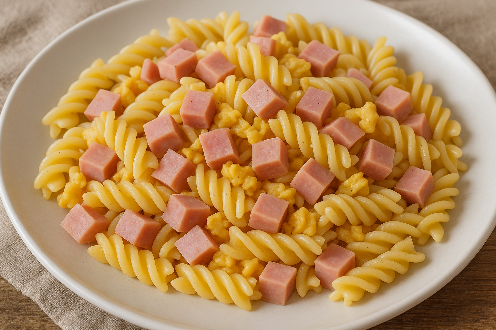

Schinkdennudeln mit Ei
Rezeptliste

Das schnelle Gericht für die Familie
Wer schnell mal was für sich und seine Kinder kochen möchte, kommt um das Gericht nicht drumherum.
Mit nur wenigen Zutaten ist es das perfkte schnelle Familienrezept!
Zutaten für 4 Personen
- 500g Nudeln (z.B. Fussili oder Makkaroni)
- 300g gekochter Schinken
- 4 Eier
- Salz und Pfeffer
- Gewürze nach Wahl (z.B. Knoblauchpulver, Paprika-Edelsüß)
- 2 EL Butter oder Öl zum Anbraten
Zubereitung
- Die Nudeln in einem großen Topf mit Salzwasser nach Packungsanleitung al dente kochen. Anschließend abgießen und beiseitestellen.
- Den gekochten Schinken in kleine Würfel schneiden.
- In einer großen Pfanne die Butter oder das Öl erhitzen und die Schinkenwürfel darin anbraten, bis sie leicht gebräunt sind.
- Die gekochten Nudeln in die Pfanne zu dem Schinken geben und gut vermischen.
- Die Eier in einer Schüssel verquirlen und mit Salz, Pfeffer und den gewünschten Gewürzen würzen.
- Die verquirlten Eier über die Nudeln und den Schinken in der Pfanne gießen. Alles gut vermengen, damit die Eier gleichmäßig verteilt sind.
- Die Hitze reduzieren und die Mischung unter ständigem Rühren kochen, bis die Eier gestockt sind und die Nudeln gut bedeckt sind.
- Die Schinkennudeln mit Ei sofort servieren. Nach Belieben mit frischen Kräutern garnieren.